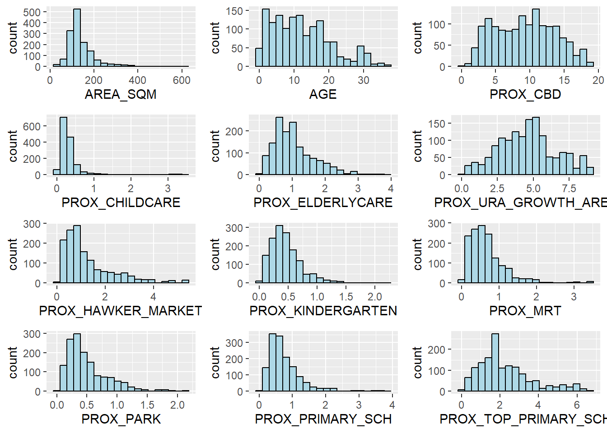
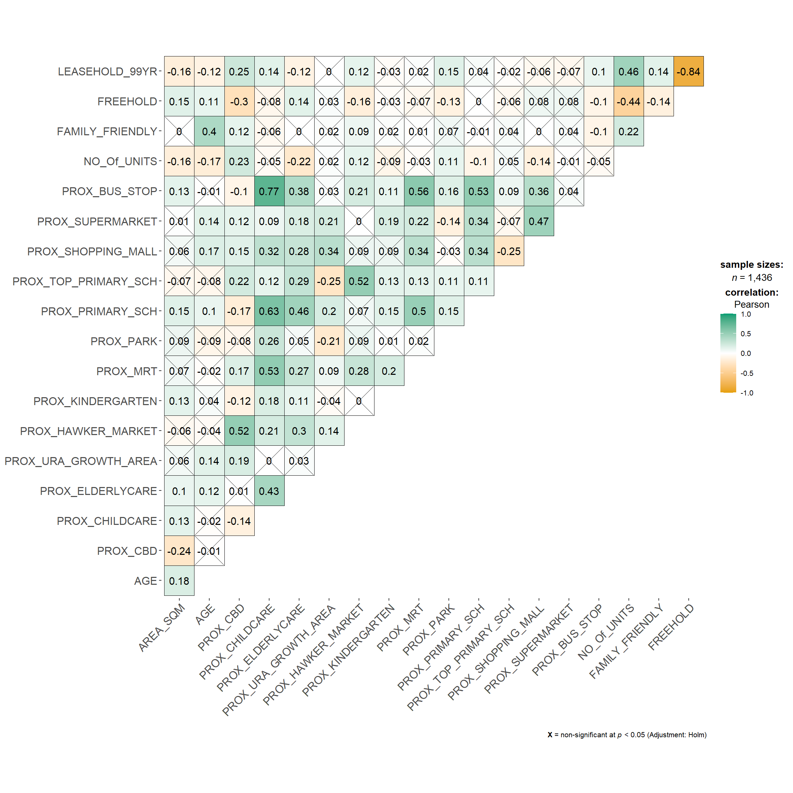
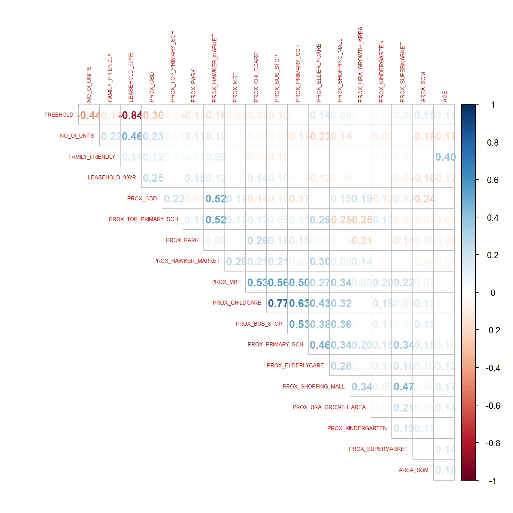
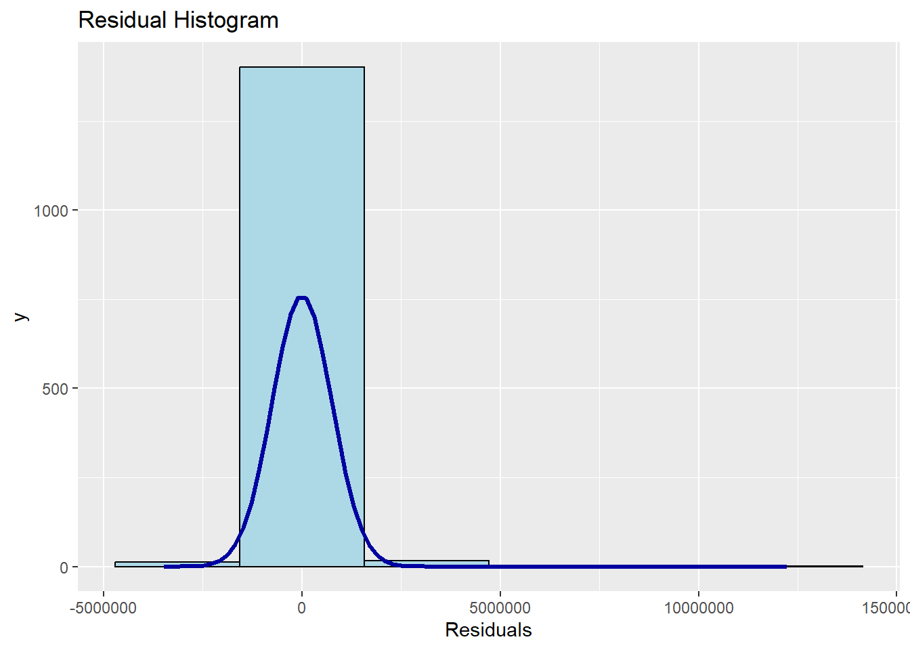
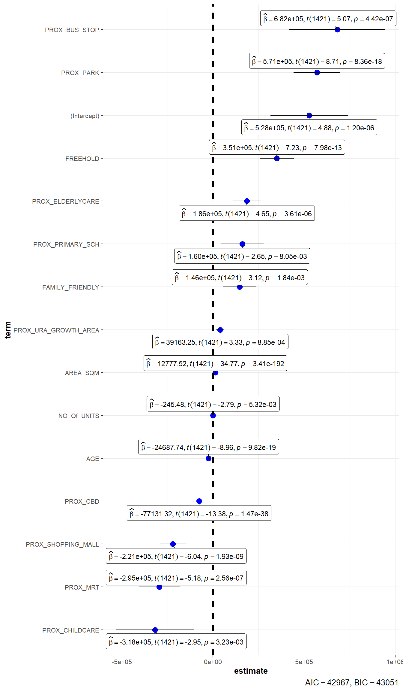
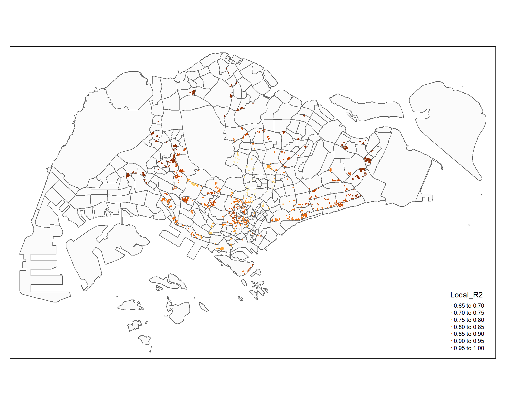
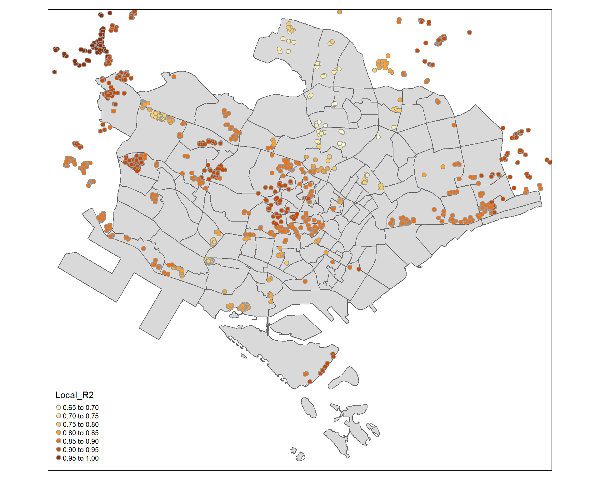

pacman::p_load(olsrr, corrplot, ggpubr, sf, spdep, GWmodel, tmap, tidyverse, gtsummary, ggstatsplot)In Class Exercise 8
Import Packages
- Build OLD and performing diagnostic tests: oslrr
- Calibrate geographical weighted family of modes: GWmodel
- Multivariate data visualisation and analysis: corrplot
- Spatial data handling: sf
- Attribute data handling: tidyverse, especially readr, ggplot2 and dplyr
- Choropleth mapping: tmap
More on GWmodel package:
The GWmodel package offers a range of localized spatial statistical techniques, including GW summary statistics, GW principal components analysis, GW discriminant analysis, and various forms of GW regression, some of which are available in both basic and robust (outlier-resistant) versions. Typically, the results or parameters obtained from GWmodel can be visually represented on maps, serving as a valuable exploratory tool that can precede and guide more conventional or advanced statistical analyses.
Geospatial Data Wrangling
Import geospatial data
- Here, we import MP_SUBZONE_WEB_PL shapefile by using st_read() of sf packages.
- Shapefile consists of URA Master Plan 2014’s planning subzone boundaries
- Polygon features are used to represent these geographic boundaries
- The GIS data is in svy21 projected coordinates systems
mpsz = st_read(dsn = "data/geospatial", layer = "MP14_SUBZONE_WEB_PL")Reading layer `MP14_SUBZONE_WEB_PL' from data source
`C:\Feliciaeng29\IS415-GAA\In-class_Ex\In-class_Ex08\data\geospatial'
using driver `ESRI Shapefile'
Simple feature collection with 323 features and 15 fields
Geometry type: MULTIPOLYGON
Dimension: XY
Bounding box: xmin: 2667.538 ymin: 15748.72 xmax: 56396.44 ymax: 50256.33
Projected CRS: SVY21Report above shows that:
- R object used to contain the imported MP14_SUBZONE_WEB_PL shapefile is called
mpszand it is a simple feature object. - The geometry type is multipolygon.
- It is also important to note that mpsz simple feature object does not have EPSG information.
Update CRS information
- Update the newly imported mpsz with the correct ESPG code (i.e. 3414)
- Verify newly transformed mpsz_svy21.
mpsz_svy21 <- st_transform(mpsz, 3414)
st_crs(mpsz_svy21)Coordinate Reference System:
User input: EPSG:3414
wkt:
PROJCRS["SVY21 / Singapore TM",
BASEGEOGCRS["SVY21",
DATUM["SVY21",
ELLIPSOID["WGS 84",6378137,298.257223563,
LENGTHUNIT["metre",1]]],
PRIMEM["Greenwich",0,
ANGLEUNIT["degree",0.0174532925199433]],
ID["EPSG",4757]],
CONVERSION["Singapore Transverse Mercator",
METHOD["Transverse Mercator",
ID["EPSG",9807]],
PARAMETER["Latitude of natural origin",1.36666666666667,
ANGLEUNIT["degree",0.0174532925199433],
ID["EPSG",8801]],
PARAMETER["Longitude of natural origin",103.833333333333,
ANGLEUNIT["degree",0.0174532925199433],
ID["EPSG",8802]],
PARAMETER["Scale factor at natural origin",1,
SCALEUNIT["unity",1],
ID["EPSG",8805]],
PARAMETER["False easting",28001.642,
LENGTHUNIT["metre",1],
ID["EPSG",8806]],
PARAMETER["False northing",38744.572,
LENGTHUNIT["metre",1],
ID["EPSG",8807]]],
CS[Cartesian,2],
AXIS["northing (N)",north,
ORDER[1],
LENGTHUNIT["metre",1]],
AXIS["easting (E)",east,
ORDER[2],
LENGTHUNIT["metre",1]],
USAGE[
SCOPE["Cadastre, engineering survey, topographic mapping."],
AREA["Singapore - onshore and offshore."],
BBOX[1.13,103.59,1.47,104.07]],
ID["EPSG",3414]]Results above show that:
- The EPSG: is indicated as 3414 now.
Reveal the extent of mpsz_svy21
- Here, we reveal the extent of mpsz_svy21 using st_bbox() of sf package
st_bbox(mpsz_svy21) xmin ymin xmax ymax
2667.538 15748.721 56396.440 50256.334 Aspatial Data Wrangling
Import the aspatial data
Here, we use: - read_csv() function of readr package to import condo_resale_2015 into R as a tibble data frame called condo_resale. - glimpse() to display the data structure.
condo_resale <- read_csv("data/aspatial/Condo_resale_2015.csv")Rows: 1436 Columns: 23
── Column specification ────────────────────────────────────────────────────────
Delimiter: ","
dbl (23): LATITUDE, LONGITUDE, POSTCODE, SELLING_PRICE, AREA_SQM, AGE, PROX_...
ℹ Use `spec()` to retrieve the full column specification for this data.
ℹ Specify the column types or set `show_col_types = FALSE` to quiet this message.glimpse(condo_resale)Rows: 1,436
Columns: 23
$ LATITUDE <dbl> 1.287145, 1.328698, 1.313727, 1.308563, 1.321437,…
$ LONGITUDE <dbl> 103.7802, 103.8123, 103.7971, 103.8247, 103.9505,…
$ POSTCODE <dbl> 118635, 288420, 267833, 258380, 467169, 466472, 3…
$ SELLING_PRICE <dbl> 3000000, 3880000, 3325000, 4250000, 1400000, 1320…
$ AREA_SQM <dbl> 309, 290, 248, 127, 145, 139, 218, 141, 165, 168,…
$ AGE <dbl> 30, 32, 33, 7, 28, 22, 24, 24, 27, 31, 17, 22, 6,…
$ PROX_CBD <dbl> 7.941259, 6.609797, 6.898000, 4.038861, 11.783402…
$ PROX_CHILDCARE <dbl> 0.16597932, 0.28027246, 0.42922669, 0.39473543, 0…
$ PROX_ELDERLYCARE <dbl> 2.5198118, 1.9333338, 0.5021395, 1.9910316, 1.121…
$ PROX_URA_GROWTH_AREA <dbl> 6.618741, 7.505109, 6.463887, 4.906512, 6.410632,…
$ PROX_HAWKER_MARKET <dbl> 1.76542207, 0.54507614, 0.37789301, 1.68259969, 0…
$ PROX_KINDERGARTEN <dbl> 0.05835552, 0.61592412, 0.14120309, 0.38200076, 0…
$ PROX_MRT <dbl> 0.5607188, 0.6584461, 0.3053433, 0.6910183, 0.528…
$ PROX_PARK <dbl> 1.1710446, 0.1992269, 0.2779886, 0.9832843, 0.116…
$ PROX_PRIMARY_SCH <dbl> 1.6340256, 0.9747834, 1.4715016, 1.4546324, 0.709…
$ PROX_TOP_PRIMARY_SCH <dbl> 3.3273195, 0.9747834, 1.4715016, 2.3006394, 0.709…
$ PROX_SHOPPING_MALL <dbl> 2.2102717, 2.9374279, 1.2256850, 0.3525671, 1.307…
$ PROX_SUPERMARKET <dbl> 0.9103958, 0.5900617, 0.4135583, 0.4162219, 0.581…
$ PROX_BUS_STOP <dbl> 0.10336166, 0.28673408, 0.28504777, 0.29872340, 0…
$ NO_Of_UNITS <dbl> 18, 20, 27, 30, 30, 31, 32, 32, 32, 32, 34, 34, 3…
$ FAMILY_FRIENDLY <dbl> 0, 0, 0, 0, 0, 1, 1, 0, 1, 1, 0, 0, 0, 0, 0, 0, 0…
$ FREEHOLD <dbl> 1, 1, 1, 1, 1, 1, 1, 1, 1, 0, 1, 1, 1, 1, 1, 1, 1…
$ LEASEHOLD_99YR <dbl> 0, 0, 0, 0, 0, 0, 0, 0, 0, 0, 0, 0, 0, 0, 0, 0, 0…- See summary statsitics of condo_resale
summary(condo_resale) LATITUDE LONGITUDE POSTCODE SELLING_PRICE
Min. :1.240 Min. :103.7 Min. : 18965 Min. : 540000
1st Qu.:1.309 1st Qu.:103.8 1st Qu.:259849 1st Qu.: 1100000
Median :1.328 Median :103.8 Median :469298 Median : 1383222
Mean :1.334 Mean :103.8 Mean :440439 Mean : 1751211
3rd Qu.:1.357 3rd Qu.:103.9 3rd Qu.:589486 3rd Qu.: 1950000
Max. :1.454 Max. :104.0 Max. :828833 Max. :18000000
AREA_SQM AGE PROX_CBD PROX_CHILDCARE
Min. : 34.0 Min. : 0.00 Min. : 0.3869 Min. :0.004927
1st Qu.:103.0 1st Qu.: 5.00 1st Qu.: 5.5574 1st Qu.:0.174481
Median :121.0 Median :11.00 Median : 9.3567 Median :0.258135
Mean :136.5 Mean :12.14 Mean : 9.3254 Mean :0.326313
3rd Qu.:156.0 3rd Qu.:18.00 3rd Qu.:12.6661 3rd Qu.:0.368293
Max. :619.0 Max. :37.00 Max. :19.1804 Max. :3.465726
PROX_ELDERLYCARE PROX_URA_GROWTH_AREA PROX_HAWKER_MARKET PROX_KINDERGARTEN
Min. :0.05451 Min. :0.2145 Min. :0.05182 Min. :0.004927
1st Qu.:0.61254 1st Qu.:3.1643 1st Qu.:0.55245 1st Qu.:0.276345
Median :0.94179 Median :4.6186 Median :0.90842 Median :0.413385
Mean :1.05351 Mean :4.5981 Mean :1.27987 Mean :0.458903
3rd Qu.:1.35122 3rd Qu.:5.7550 3rd Qu.:1.68578 3rd Qu.:0.578474
Max. :3.94916 Max. :9.1554 Max. :5.37435 Max. :2.229045
PROX_MRT PROX_PARK PROX_PRIMARY_SCH PROX_TOP_PRIMARY_SCH
Min. :0.05278 Min. :0.02906 Min. :0.07711 Min. :0.07711
1st Qu.:0.34646 1st Qu.:0.26211 1st Qu.:0.44024 1st Qu.:1.34451
Median :0.57430 Median :0.39926 Median :0.63505 Median :1.88213
Mean :0.67316 Mean :0.49802 Mean :0.75471 Mean :2.27347
3rd Qu.:0.84844 3rd Qu.:0.65592 3rd Qu.:0.95104 3rd Qu.:2.90954
Max. :3.48037 Max. :2.16105 Max. :3.92899 Max. :6.74819
PROX_SHOPPING_MALL PROX_SUPERMARKET PROX_BUS_STOP NO_Of_UNITS
Min. :0.0000 Min. :0.0000 Min. :0.001595 Min. : 18.0
1st Qu.:0.5258 1st Qu.:0.3695 1st Qu.:0.098356 1st Qu.: 188.8
Median :0.9357 Median :0.5687 Median :0.151710 Median : 360.0
Mean :1.0455 Mean :0.6141 Mean :0.193974 Mean : 409.2
3rd Qu.:1.3994 3rd Qu.:0.7862 3rd Qu.:0.220466 3rd Qu.: 590.0
Max. :3.4774 Max. :2.2441 Max. :2.476639 Max. :1703.0
FAMILY_FRIENDLY FREEHOLD LEASEHOLD_99YR
Min. :0.0000 Min. :0.0000 Min. :0.0000
1st Qu.:0.0000 1st Qu.:0.0000 1st Qu.:0.0000
Median :0.0000 Median :0.0000 Median :0.0000
Mean :0.4868 Mean :0.4227 Mean :0.4882
3rd Qu.:1.0000 3rd Qu.:1.0000 3rd Qu.:1.0000
Max. :1.0000 Max. :1.0000 Max. :1.0000 Convert aspatial data frame into a sf object
Here, we use:
- st_as_sf() of sf package to convert aspatial data frame to sf object and
- st_transform() of sf package to convert the coordinates from wgs84 (i.e. crs:4326) to svy21 (i.e. crs=3414).
Note: (WGS84: for crs: 4326)
Note: (Always start with logitude then latitude, because we always start with the x coordinate then the y)
condo_resale.sf <- st_as_sf(condo_resale,
coords = c("LONGITUDE", "LATITUDE"),
crs=4326) %>%
st_transform(crs=3414)
head(condo_resale.sf)Simple feature collection with 6 features and 21 fields
Geometry type: POINT
Dimension: XY
Bounding box: xmin: 22085.12 ymin: 29951.54 xmax: 41042.56 ymax: 34546.2
Projected CRS: SVY21 / Singapore TM
# A tibble: 6 × 22
POSTCODE SELLING_PRICE AREA_SQM AGE PROX_CBD PROX_CHILDCARE PROX_ELDERLYCARE
<dbl> <dbl> <dbl> <dbl> <dbl> <dbl> <dbl>
1 118635 3000000 309 30 7.94 0.166 2.52
2 288420 3880000 290 32 6.61 0.280 1.93
3 267833 3325000 248 33 6.90 0.429 0.502
4 258380 4250000 127 7 4.04 0.395 1.99
5 467169 1400000 145 28 11.8 0.119 1.12
6 466472 1320000 139 22 10.3 0.125 0.789
# ℹ 15 more variables: PROX_URA_GROWTH_AREA <dbl>, PROX_HAWKER_MARKET <dbl>,
# PROX_KINDERGARTEN <dbl>, PROX_MRT <dbl>, PROX_PARK <dbl>,
# PROX_PRIMARY_SCH <dbl>, PROX_TOP_PRIMARY_SCH <dbl>,
# PROX_SHOPPING_MALL <dbl>, PROX_SUPERMARKET <dbl>, PROX_BUS_STOP <dbl>,
# NO_Of_UNITS <dbl>, FAMILY_FRIENDLY <dbl>, FREEHOLD <dbl>,
# LEASEHOLD_99YR <dbl>, geometry <POINT [m]>Exploratory Data Analysis
EDA using statistical graphics
Plot distribution
- Plot the distribution of SELLING_PRICE by using appropriate Exploratory Data Analysis (EDA)
ggplot(data=condo_resale.sf, aes(x=`SELLING_PRICE`)) +
geom_histogram(bins=20, color="black", fill="light blue")
Results above reveals:
- A right skewed distribution.
- This means that more condominium units were transacted at relative lower prices.
- Statistically, the skewed distribution can be normalised by using log transformation which we will be doing in the next section.
Normalise using Log Transformation
Here, we will:
- Derive a new variable called
LOG_SELLING_PRICEby using a log transformation on the variable SELLING_PRICE. - It is performed using mutate() of dplyr package.
condo_resale.sf <- condo_resale.sf %>%
mutate(`LOG_SELLING_PRICE` = log(SELLING_PRICE))Plot Histogram of Count by LOG_SELLING_PRICE
ggplot(data=condo_resale.sf, aes(x=`LOG_SELLING_PRICE`)) +
geom_histogram(bins=20, color="black", fill="light blue")
Notice that the distribution is relatively less skewed after the transformation.
Multiple Histogram Plots distribution of variables
Here, we will:
- First create 12 histograms. Then,
- Use ggarrnage() of ggpubr package to organise these histogram into a 3 columns by 4 rows small multiple plot.
AREA_SQM <- ggplot(data=condo_resale.sf, aes(x= `AREA_SQM`)) +
geom_histogram(bins=20, color="black", fill="light blue")
AGE <- ggplot(data=condo_resale.sf, aes(x= `AGE`)) +
geom_histogram(bins=20, color="black", fill="light blue")
PROX_CBD <- ggplot(data=condo_resale.sf, aes(x= `PROX_CBD`)) +
geom_histogram(bins=20, color="black", fill="light blue")
PROX_CHILDCARE <- ggplot(data=condo_resale.sf, aes(x= `PROX_CHILDCARE`)) +
geom_histogram(bins=20, color="black", fill="light blue")
PROX_ELDERLYCARE <- ggplot(data=condo_resale.sf, aes(x= `PROX_ELDERLYCARE`)) +
geom_histogram(bins=20, color="black", fill="light blue")
PROX_URA_GROWTH_AREA <- ggplot(data=condo_resale.sf, aes(x= `PROX_URA_GROWTH_AREA`)) +
geom_histogram(bins=20, color="black", fill="light blue")
PROX_HAWKER_MARKET <- ggplot(data=condo_resale.sf, aes(x= `PROX_HAWKER_MARKET`)) +
geom_histogram(bins=20, color="black", fill="light blue")
PROX_KINDERGARTEN <- ggplot(data=condo_resale.sf, aes(x= `PROX_KINDERGARTEN`)) +
geom_histogram(bins=20, color="black", fill="light blue")
PROX_MRT <- ggplot(data=condo_resale.sf, aes(x= `PROX_MRT`)) +
geom_histogram(bins=20, color="black", fill="light blue")
PROX_PARK <- ggplot(data=condo_resale.sf, aes(x= `PROX_PARK`)) +
geom_histogram(bins=20, color="black", fill="light blue")
PROX_PRIMARY_SCH <- ggplot(data=condo_resale.sf, aes(x= `PROX_PRIMARY_SCH`)) +
geom_histogram(bins=20, color="black", fill="light blue")
PROX_TOP_PRIMARY_SCH <- ggplot(data=condo_resale.sf, aes(x= `PROX_TOP_PRIMARY_SCH`)) +
geom_histogram(bins=20, color="black", fill="light blue")
ggarrange(AREA_SQM, AGE, PROX_CBD, PROX_CHILDCARE, PROX_ELDERLYCARE, PROX_URA_GROWTH_AREA, PROX_HAWKER_MARKET, PROX_KINDERGARTEN, PROX_MRT, PROX_PARK, PROX_PRIMARY_SCH, PROX_TOP_PRIMARY_SCH, ncol = 3, nrow = 4)
Drawing Statistical Point Map
Here, we will reveal the geospatial distribution condominium resale prices in Singapore.
- The map will be prepared by using tmap package.
- tmap_mode(“view”) to use the interactive mode of tmap
- Then, create an interactive point symbol map
- tm_dots() is used instead of tm_bubbles()
- set.zoom.limits argument of tm_view() sets the minimum and maximum zoom level to 11 and 14 respectively.
- Lastly, tmap_mode(“plot”) to display plot mode
tmap_mode("plot")tmap mode set to plottingtm_shape(mpsz_svy21)+
tm_polygons() +
tm_shape(condo_resale.sf) +
tm_dots(col = "SELLING_PRICE",
alpha = 0.6,
style="quantile") +
tm_view(set.zoom.limits = c(11,14))
tmap_mode("plot")tmap mode set to plotting- There is some error if you have the latest sf package when plotting the interactive view plot
- If you want, you can install the specific package version
- require(devtools)
- install_version(“sf”, version = “0.9-8”)
- For now, we will plot it as a plot first
Hedonic Pricing Modelling in R
Simple Linear Regression Method
Build Simple Linear Regression model
- Build a simple linear regression model by using:
SELLING_PRICEas the dependent variable andAREA_SQMas the independent variable.
- lm() returns an object of class “lm” or for multiple responses of class c(“mlm”, “lm”).
- summary() and anova() can be used to obtain and print a summary and analysis of variance table of the results.
- The generic accessor functions coefficients, effects, fitted.values and residuals extract various useful features of the value returned by lm.
condo.slr <- lm(formula=SELLING_PRICE ~ AREA_SQM, data = condo_resale.sf)
summary(condo.slr)
Call:
lm(formula = SELLING_PRICE ~ AREA_SQM, data = condo_resale.sf)
Residuals:
Min 1Q Median 3Q Max
-3695815 -391764 -87517 258900 13503875
Coefficients:
Estimate Std. Error t value Pr(>|t|)
(Intercept) -258121.1 63517.2 -4.064 5.09e-05 ***
AREA_SQM 14719.0 428.1 34.381 < 2e-16 ***
---
Signif. codes: 0 '***' 0.001 '**' 0.01 '*' 0.05 '.' 0.1 ' ' 1
Residual standard error: 942700 on 1434 degrees of freedom
Multiple R-squared: 0.4518, Adjusted R-squared: 0.4515
F-statistic: 1182 on 1 and 1434 DF, p-value: < 2.2e-16Results above show that:
SELLING_PRICEcan be explained by using the formula:*y = -258121.1 + 14719x1*R-squared of 0.4518 reveals that the simple regression model built is able to explain about 45% of the resale prices.
Since p-value is much smaller than 0.0001, we will reject the null hypothesis that mean is a good estimator of
SELLING_PRICE.This will allow us to infer that simple linear regression model above is a good estimator of
SELLING_PRICEThe Coefficients: section of the report reveals that the p-values of both the estimates of the
InterceptandARA_SQMare smaller than 0.001.In view of this, the null hypothesis of the B0 and B1 are equal to 0 will be rejected.
As a result, we will be able to infer that the B0 and B1 are good parameter estimates.
Visualise best fit curve
Here, we visualise the best fit curve on a scatterplot:
- Using lm() as a method function in ggplot’s geometry
ggplot(data=condo_resale.sf,
aes(x=`AREA_SQM`, y=`SELLING_PRICE`)) +
geom_point() +
geom_smooth(method = lm)`geom_smooth()` using formula = 'y ~ x'
Figure above reveals that there are a few statistical outliers with relatively high selling prices.
Multiple Linear Regression Method
Visualise relationships of independent variables
In class Exercise new chart:
Now we are calibrating multiple regression. It gives you all the statistical information that is not provided for corrplot
ggcorrmat(condo_resale[, 5:23])
- It is important to ensure that the independent variables used are not highly correlated to each other.
- If these highly correlated independent variables are used in building a regression model by mistake, the quality of the model will be compromised.
- This phenomenon is known as multicollinearity in statistics.
Correlation matrix is commonly used to visualise the relationships between the independent variables.
- Beside the pairs() of R, there are many packages that support the display of a correlation matrix.
- In this section, the corrplot package will be used.
- To plot a scatterplot matrix of the relationship between the independent variables in condo_resale data.frame.
- Matrix reorder is very important for mining the hidden structure and pattern in the matrix.
- There are 4 methods in corrplot (parameter order),
- namely “AOE”, “FPC”, “hclust”, “alphabet”.
- Alphabet order is used to order the variables alphabetically.
corrplot(cor(condo_resale[, 5:23]), diag = FALSE, order = "AOE",
tl.pos = "td", tl.cex = 0.5, method = "number", type = "upper")
Results above show that:
Freeholdis highly correlated toLEASE_99YEAR.- Thus, it is wiser to only include either one of them in the subsequent model building.
- As a result,
LEASE_99YEARis excluded in the subsequent model building. -PROX_CHILDCAREandPROX_BUS_STOPalso has a high correlation
Build a hedonic pricing model using multiple linear regression method
Calibrate the multiple linear regression model
- Use lm() to calibrate the multiple linear regression model.
Note: (This is the lm method based in R. SELLING_PRICE is the dependent variable then the rest will be independent variables)
condo.mlr <- lm(formula = SELLING_PRICE ~ AREA_SQM + AGE + PROX_CBD + PROX_CHILDCARE + PROX_ELDERLYCARE + PROX_URA_GROWTH_AREA + PROX_HAWKER_MARKET + PROX_KINDERGARTEN + PROX_MRT + PROX_PARK + PROX_PRIMARY_SCH + PROX_TOP_PRIMARY_SCH + PROX_SHOPPING_MALL + PROX_SUPERMARKET + PROX_BUS_STOP + NO_Of_UNITS + FAMILY_FRIENDLY + FREEHOLD, data=condo_resale.sf)
summary(condo.mlr)
Call:
lm(formula = SELLING_PRICE ~ AREA_SQM + AGE + PROX_CBD + PROX_CHILDCARE +
PROX_ELDERLYCARE + PROX_URA_GROWTH_AREA + PROX_HAWKER_MARKET +
PROX_KINDERGARTEN + PROX_MRT + PROX_PARK + PROX_PRIMARY_SCH +
PROX_TOP_PRIMARY_SCH + PROX_SHOPPING_MALL + PROX_SUPERMARKET +
PROX_BUS_STOP + NO_Of_UNITS + FAMILY_FRIENDLY + FREEHOLD,
data = condo_resale.sf)
Residuals:
Min 1Q Median 3Q Max
-3475964 -293923 -23069 241043 12260381
Coefficients:
Estimate Std. Error t value Pr(>|t|)
(Intercept) 481728.40 121441.01 3.967 7.65e-05 ***
AREA_SQM 12708.32 369.59 34.385 < 2e-16 ***
AGE -24440.82 2763.16 -8.845 < 2e-16 ***
PROX_CBD -78669.78 6768.97 -11.622 < 2e-16 ***
PROX_CHILDCARE -351617.91 109467.25 -3.212 0.00135 **
PROX_ELDERLYCARE 171029.42 42110.51 4.061 5.14e-05 ***
PROX_URA_GROWTH_AREA 38474.53 12523.57 3.072 0.00217 **
PROX_HAWKER_MARKET 23746.10 29299.76 0.810 0.41782
PROX_KINDERGARTEN 147468.99 82668.87 1.784 0.07466 .
PROX_MRT -314599.68 57947.44 -5.429 6.66e-08 ***
PROX_PARK 563280.50 66551.68 8.464 < 2e-16 ***
PROX_PRIMARY_SCH 180186.08 65237.95 2.762 0.00582 **
PROX_TOP_PRIMARY_SCH 2280.04 20410.43 0.112 0.91107
PROX_SHOPPING_MALL -206604.06 42840.60 -4.823 1.57e-06 ***
PROX_SUPERMARKET -44991.80 77082.64 -0.584 0.55953
PROX_BUS_STOP 683121.35 138353.28 4.938 8.85e-07 ***
NO_Of_UNITS -231.18 89.03 -2.597 0.00951 **
FAMILY_FRIENDLY 140340.77 47020.55 2.985 0.00289 **
FREEHOLD 359913.01 49220.22 7.312 4.38e-13 ***
---
Signif. codes: 0 '***' 0.001 '**' 0.01 '*' 0.05 '.' 0.1 ' ' 1
Residual standard error: 755800 on 1417 degrees of freedom
Multiple R-squared: 0.6518, Adjusted R-squared: 0.6474
F-statistic: 147.4 on 18 and 1417 DF, p-value: < 2.2e-16Results above show that:
- Not all the independent variables are statistically significant.
- Example:
PROX_TOP_PRIMARY_SCHvalue is very high - Example:
PROX_SUPERMARKETvalue is high - Example:
PROX_HAWKER_MARKETvalue is high
- Example:
- We will revise the model by removing those variables which are not statistically significant.
- Here, by adding more variables, the adjusted r square actually improved.
- From the previous 0.45 increased to close to 0.64 percent.
- How to interpret?
- If you hold the rest of the independent variables constant (
AGEonwards), means that for 1 unit increase ofAREA_SQM, the price will increase by +12708 - Similarly, for 1 unit increase of
AGE, the resale price will drop by -24440 if we hold the other independent variables constant
- If you hold the rest of the independent variables constant (
Calibrate the revised model
condo.mlr1 <- lm(formula = SELLING_PRICE ~ AREA_SQM + AGE + PROX_CBD + PROX_CHILDCARE + PROX_ELDERLYCARE + PROX_URA_GROWTH_AREA + PROX_MRT + PROX_PARK + PROX_PRIMARY_SCH + PROX_SHOPPING_MALL + PROX_BUS_STOP + NO_Of_UNITS + FAMILY_FRIENDLY + FREEHOLD, data=condo_resale.sf)
ols_regress(condo.mlr1) Model Summary
-----------------------------------------------------------------------------
R 0.807 RMSE 751998.679
R-Squared 0.651 MSE 571471422208.591
Adj. R-Squared 0.647 Coef. Var 43.168
Pred R-Squared 0.638 AIC 42966.758
MAE 414819.628 SBC 43051.072
-----------------------------------------------------------------------------
RMSE: Root Mean Square Error
MSE: Mean Square Error
MAE: Mean Absolute Error
AIC: Akaike Information Criteria
SBC: Schwarz Bayesian Criteria
ANOVA
--------------------------------------------------------------------------------
Sum of
Squares DF Mean Square F Sig.
--------------------------------------------------------------------------------
Regression 1.512586e+15 14 1.080418e+14 189.059 0.0000
Residual 8.120609e+14 1421 571471422208.591
Total 2.324647e+15 1435
--------------------------------------------------------------------------------
Parameter Estimates
-----------------------------------------------------------------------------------------------------------------
model Beta Std. Error Std. Beta t Sig lower upper
-----------------------------------------------------------------------------------------------------------------
(Intercept) 527633.222 108183.223 4.877 0.000 315417.244 739849.200
AREA_SQM 12777.523 367.479 0.584 34.771 0.000 12056.663 13498.382
AGE -24687.739 2754.845 -0.167 -8.962 0.000 -30091.739 -19283.740
PROX_CBD -77131.323 5763.125 -0.263 -13.384 0.000 -88436.469 -65826.176
PROX_CHILDCARE -318472.751 107959.512 -0.084 -2.950 0.003 -530249.889 -106695.613
PROX_ELDERLYCARE 185575.623 39901.864 0.090 4.651 0.000 107302.737 263848.510
PROX_URA_GROWTH_AREA 39163.254 11754.829 0.060 3.332 0.001 16104.571 62221.936
PROX_MRT -294745.107 56916.367 -0.112 -5.179 0.000 -406394.234 -183095.980
PROX_PARK 570504.807 65507.029 0.150 8.709 0.000 442003.938 699005.677
PROX_PRIMARY_SCH 159856.136 60234.599 0.062 2.654 0.008 41697.849 278014.424
PROX_SHOPPING_MALL -220947.251 36561.832 -0.115 -6.043 0.000 -292668.213 -149226.288
PROX_BUS_STOP 682482.221 134513.243 0.134 5.074 0.000 418616.359 946348.082
NO_Of_UNITS -245.480 87.947 -0.053 -2.791 0.005 -418.000 -72.961
FAMILY_FRIENDLY 146307.576 46893.021 0.057 3.120 0.002 54320.593 238294.560
FREEHOLD 350599.812 48506.485 0.136 7.228 0.000 255447.802 445751.821
------------------------------------------------------------------------------------------------------------------ Herem our condo.mlr1 will contain the coefficients, residuals, effects and fitted values. We will be using the residuals and extract it as a dataframe later on to examine it closely.
tbl_regression(condo.mlr1, intercept = TRUE)| Characteristic | Beta | 95% CI1 | p-value |
|---|---|---|---|
| (Intercept) | 527,633 | 315,417, 739,849 | <0.001 |
| AREA_SQM | 12,778 | 12,057, 13,498 | <0.001 |
| AGE | -24,688 | -30,092, -19,284 | <0.001 |
| PROX_CBD | -77,131 | -88,436, -65,826 | <0.001 |
| PROX_CHILDCARE | -318,473 | -530,250, -106,696 | 0.003 |
| PROX_ELDERLYCARE | 185,576 | 107,303, 263,849 | <0.001 |
| PROX_URA_GROWTH_AREA | 39,163 | 16,105, 62,222 | <0.001 |
| PROX_MRT | -294,745 | -406,394, -183,096 | <0.001 |
| PROX_PARK | 570,505 | 442,004, 699,006 | <0.001 |
| PROX_PRIMARY_SCH | 159,856 | 41,698, 278,014 | 0.008 |
| PROX_SHOPPING_MALL | -220,947 | -292,668, -149,226 | <0.001 |
| PROX_BUS_STOP | 682,482 | 418,616, 946,348 | <0.001 |
| NO_Of_UNITS | -245 | -418, -73 | 0.005 |
| FAMILY_FRIENDLY | 146,308 | 54,321, 238,295 | 0.002 |
| FREEHOLD | 350,600 | 255,448, 445,752 | <0.001 |
| 1 CI = Confidence Interval | |||
Check for multicolinearity
When performing OLS regression, we can use:
- olsrr provides a collection of very useful methods for building better multiple linear regression models:
- comprehensive regression output
- residual diagnostics
- measures of influence
- heteroskedasticity tests
- collinearity diagnostics
- model fit assessment
- variable contribution assessment
- variable selection procedures
- the ols_vif_tol() of olsrr package is used to check if there are any strong signs of multicollinearity.
ols_vif_tol(condo.mlr1) Variables Tolerance VIF
1 AREA_SQM 0.8728554 1.145665
2 AGE 0.7071275 1.414172
3 PROX_CBD 0.6356147 1.573280
4 PROX_CHILDCARE 0.3066019 3.261559
5 PROX_ELDERLYCARE 0.6598479 1.515501
6 PROX_URA_GROWTH_AREA 0.7510311 1.331503
7 PROX_MRT 0.5236090 1.909822
8 PROX_PARK 0.8279261 1.207837
9 PROX_PRIMARY_SCH 0.4524628 2.210126
10 PROX_SHOPPING_MALL 0.6738795 1.483945
11 PROX_BUS_STOP 0.3514118 2.845664
12 NO_Of_UNITS 0.6901036 1.449058
13 FAMILY_FRIENDLY 0.7244157 1.380423
14 FREEHOLD 0.6931163 1.442759Results above show that:
- There are no signs of multicollinearity among the independent variables as the VIF of the independent variables are less than 10.
Test for Non-Linearity
- In multiple linear regression, it is important for us to test the assumption that linearity and additivity of the relationship between dependent and independent variables.
- Here, we use ols_plot_resid_fit() of olsrr package to perform linearity assumption test.
ols_plot_resid_fit(condo.mlr1)
Results above show that:
- Most of the data points are scattered around the 0 line.
- Hence we can safely conclude that the relationships between the dependent variable and independent variables are linear.
Test for Normality Assumption
- Use ols_plot_resid_hist() of olsrr package to perform normality assumption test.
ols_plot_resid_hist(condo.mlr1)
Results above show that:
- Reveals that the residual of the multiple linear regression model (i.e. condo.mlr1) is resemble normal distribution.
For formal statistical test methods, the ols_test_normality() of olsrr package can be used as well,
ols_test_normality(condo.mlr1)Warning in ks.test.default(y, "pnorm", mean(y), sd(y)): ties should not be
present for the Kolmogorov-Smirnov test-----------------------------------------------
Test Statistic pvalue
-----------------------------------------------
Shapiro-Wilk 0.6856 0.0000
Kolmogorov-Smirnov 0.1366 0.0000
Cramer-von Mises 121.0768 0.0000
Anderson-Darling 67.9551 0.0000
-----------------------------------------------Results above show that:
- p-values of the four tests are way smaller than the alpha value of 0.05.
- Hence we will reject the null hypothesis that the residual does NOT resemble normal distribution.
Test for Spatial Autocorrelation
- The hedonic model we try to build are using geographically referenced attributes.
- Hence it is also important for us to visual the residual of the hedonic pricing model.
- In order to perform spatial autocorrelation test, we need to convert condo_resale.sf simple into a SpatialPointsDataFrame.
Export residual of hedonic pricing model
- Extract the residual of the hedonic pricing model and save it as a data frame.
mlr.output <- as.data.frame(condo.mlr1$residuals)Join with condo_resale.sf object
- Join the newly created data frame with condo_resale.sf object.
condo_resale.res.sf <- cbind(condo_resale.sf,
condo.mlr1$residuals) %>%
rename(`MLR_RES` = `condo.mlr1.residuals`)In Class Exercise ggcoefstats: Visualise model parameter
Can change it to non paramedic if data is not normal distribution. In this case we can do a sort in ascending order.
mlr.p <- ggcoefstats(condo.mlr1,
sort = "ascending")Number of labels is greater than default palette color count.
• Select another color `palette` (and/or `package`).mlr.p
My notes:
- MLR_RES will be used for mapping purposes or for Moran I.
Convert to SpatialPointsDataFrame
- Convert condo_resale.res.sf simple feature object into a SpatialPointsDataFrame because spdep package can only process sp conformed spatial data objects
condo_resale.sp <- as_Spatial(condo_resale.res.sf)
condo_resale.spclass : SpatialPointsDataFrame
features : 1436
extent : 14940.85, 43352.45, 24765.67, 48382.81 (xmin, xmax, ymin, ymax)
crs : +proj=tmerc +lat_0=1.36666666666667 +lon_0=103.833333333333 +k=1 +x_0=28001.642 +y_0=38744.572 +ellps=WGS84 +towgs84=0,0,0,0,0,0,0 +units=m +no_defs
variables : 23
names : POSTCODE, SELLING_PRICE, AREA_SQM, AGE, PROX_CBD, PROX_CHILDCARE, PROX_ELDERLYCARE, PROX_URA_GROWTH_AREA, PROX_HAWKER_MARKET, PROX_KINDERGARTEN, PROX_MRT, PROX_PARK, PROX_PRIMARY_SCH, PROX_TOP_PRIMARY_SCH, PROX_SHOPPING_MALL, ...
min values : 18965, 540000, 34, 0, 0.386916393, 0.004927023, 0.054508623, 0.214539508, 0.051817113, 0.004927023, 0.052779424, 0.029064164, 0.077106132, 0.077106132, 0, ...
max values : 828833, 1.8e+07, 619, 37, 19.18042832, 3.46572633, 3.949157205, 9.15540001, 5.374348075, 2.229045366, 3.48037319, 2.16104919, 3.928989144, 6.748192062, 3.477433767, ... Display interactive point symbol map
Note: it is currently in plot mode because of our sf package
tmap_mode("plot")tmap mode set to plottingtm_shape(mpsz_svy21)+
tm_polygons(alpha = 0.4) +
tm_shape(condo_resale.res.sf) +
tm_dots(col = "MLR_RES",
alpha = 0.6,
style="quantile") +
tm_view(set.zoom.limits = c(11,14))Variable(s) "MLR_RES" contains positive and negative values, so midpoint is set to 0. Set midpoint = NA to show the full spectrum of the color palette.
tmap_mode("plot")tmap mode set to plottingResults above show that:
- There is signs of spatial autocorrelation.
- To prove that our observation is indeed true, the Moran’s I test will be performed
Moran’s I test
Compute the distance-based weight matrix
- Compute the distance-based weight matrix by using dnearneigh() of spdep package
nb <- dnearneigh(coordinates(condo_resale.sp), 0, 1500, longlat = FALSE)
summary(nb)Neighbour list object:
Number of regions: 1436
Number of nonzero links: 66266
Percentage nonzero weights: 3.213526
Average number of links: 46.14624
10 disjoint connected subgraphs
Link number distribution:
1 3 5 7 9 10 11 12 13 14 15 16 17 18 19 20 21 22 23 24
3 3 9 4 3 15 10 19 17 45 19 5 14 29 19 6 35 45 18 47
25 26 27 28 29 30 31 32 33 34 35 36 37 38 39 40 41 42 43 44
16 43 22 26 21 11 9 23 22 13 16 25 21 37 16 18 8 21 4 12
45 46 47 48 49 50 51 52 53 54 55 56 57 58 59 60 61 62 63 64
8 36 18 14 14 43 11 12 8 13 12 13 4 5 6 12 11 20 29 33
65 66 67 68 69 70 71 72 73 74 75 76 77 78 79 80 81 82 83 84
15 20 10 14 15 15 11 16 12 10 8 19 12 14 9 8 4 13 11 6
85 86 87 88 89 90 91 92 93 94 95 96 97 98 99 100 101 102 103 104
4 9 4 4 4 6 2 16 9 4 5 9 3 9 4 2 1 2 1 1
105 106 107 108 109 110 112 116 125
1 5 9 2 1 3 1 1 1
3 least connected regions:
193 194 277 with 1 link
1 most connected region:
285 with 125 linksConvert to a spatial weights
- nb2listw() of spdep package will be used to convert the output neighbours lists (i.e. nb) into a spatial weights
nb_lw <- nb2listw(nb, style = 'W')
summary(nb_lw)Characteristics of weights list object:
Neighbour list object:
Number of regions: 1436
Number of nonzero links: 66266
Percentage nonzero weights: 3.213526
Average number of links: 46.14624
10 disjoint connected subgraphs
Link number distribution:
1 3 5 7 9 10 11 12 13 14 15 16 17 18 19 20 21 22 23 24
3 3 9 4 3 15 10 19 17 45 19 5 14 29 19 6 35 45 18 47
25 26 27 28 29 30 31 32 33 34 35 36 37 38 39 40 41 42 43 44
16 43 22 26 21 11 9 23 22 13 16 25 21 37 16 18 8 21 4 12
45 46 47 48 49 50 51 52 53 54 55 56 57 58 59 60 61 62 63 64
8 36 18 14 14 43 11 12 8 13 12 13 4 5 6 12 11 20 29 33
65 66 67 68 69 70 71 72 73 74 75 76 77 78 79 80 81 82 83 84
15 20 10 14 15 15 11 16 12 10 8 19 12 14 9 8 4 13 11 6
85 86 87 88 89 90 91 92 93 94 95 96 97 98 99 100 101 102 103 104
4 9 4 4 4 6 2 16 9 4 5 9 3 9 4 2 1 2 1 1
105 106 107 108 109 110 112 116 125
1 5 9 2 1 3 1 1 1
3 least connected regions:
193 194 277 with 1 link
1 most connected region:
285 with 125 links
Weights style: W
Weights constants summary:
n nn S0 S1 S2
W 1436 2062096 1436 94.81916 5798.341Perform Moran’s I test for residual spatial autocorrelation
- Use lm.morantest() of spdep package
lm.morantest(condo.mlr1, nb_lw)
Global Moran I for regression residuals
data:
model: lm(formula = SELLING_PRICE ~ AREA_SQM + AGE + PROX_CBD +
PROX_CHILDCARE + PROX_ELDERLYCARE + PROX_URA_GROWTH_AREA + PROX_MRT +
PROX_PARK + PROX_PRIMARY_SCH + PROX_SHOPPING_MALL + PROX_BUS_STOP +
NO_Of_UNITS + FAMILY_FRIENDLY + FREEHOLD, data = condo_resale.sf)
weights: nb_lw
Moran I statistic standard deviate = 24.366, p-value < 2.2e-16
alternative hypothesis: greater
sample estimates:
Observed Moran I Expectation Variance
1.438876e-01 -5.487594e-03 3.758259e-05 Results above show that:
- p-value is less than 0.00000000000000022 which is less than the alpha value of 0.05.
- Hence, we will reject the null hypothesis that the residuals are randomly distributed.
- Since the Observed Global Moran I = 0.1424418 which is greater than 0, we can infer than the residuals resemble cluster distribution.
Building Hedonic Pricing Models using GWmodel
In this section, we will learn how to modelling hedonic pricing using both the fixed and adaptive bandwidth schemes.
Build Fixed Bandwidth GWR Model
Compute fixed bandwith
- bw.gwr() of GWModel package is used to determine the optimal fixed bandwidth to use in the model.
- Notice that the argument adaptive is set to FALSE indicates that we are interested to compute the fixed bandwidth.
- There are 2 possible approaches to determine the stopping rule, they are:
- CV cross-validation approach and
- AIC corrected (AICc) approach.
- We define the stopping rule using approach argument.
bw.fixed <- bw.gwr(formula = SELLING_PRICE ~ AREA_SQM + AGE + PROX_CBD + PROX_CHILDCARE + PROX_ELDERLYCARE + PROX_URA_GROWTH_AREA + PROX_MRT + PROX_PARK + PROX_PRIMARY_SCH + PROX_SHOPPING_MALL + PROX_BUS_STOP + NO_Of_UNITS + FAMILY_FRIENDLY + FREEHOLD, data=condo_resale.sp, approach="CV", kernel="gaussian", adaptive=FALSE, longlat=FALSE)Fixed bandwidth: 17660.96 CV score: 8.259118e+14
Fixed bandwidth: 10917.26 CV score: 7.970454e+14
Fixed bandwidth: 6749.419 CV score: 7.273273e+14
Fixed bandwidth: 4173.553 CV score: 6.300006e+14
Fixed bandwidth: 2581.58 CV score: 5.404958e+14
Fixed bandwidth: 1597.687 CV score: 4.857515e+14
Fixed bandwidth: 989.6077 CV score: 4.722431e+14
Fixed bandwidth: 613.7939 CV score: 1.378294e+16
Fixed bandwidth: 1221.873 CV score: 4.778717e+14
Fixed bandwidth: 846.0596 CV score: 4.791629e+14
Fixed bandwidth: 1078.325 CV score: 4.751406e+14
Fixed bandwidth: 934.7772 CV score: 4.72518e+14
Fixed bandwidth: 1023.495 CV score: 4.730305e+14
Fixed bandwidth: 968.6643 CV score: 4.721317e+14
Fixed bandwidth: 955.7206 CV score: 4.722072e+14
Fixed bandwidth: 976.6639 CV score: 4.721387e+14
Fixed bandwidth: 963.7202 CV score: 4.721484e+14
Fixed bandwidth: 971.7199 CV score: 4.721293e+14
Fixed bandwidth: 973.6083 CV score: 4.721309e+14
Fixed bandwidth: 970.5527 CV score: 4.721295e+14
Fixed bandwidth: 972.4412 CV score: 4.721296e+14
Fixed bandwidth: 971.2741 CV score: 4.721292e+14
Fixed bandwidth: 970.9985 CV score: 4.721293e+14
Fixed bandwidth: 971.4443 CV score: 4.721292e+14
Fixed bandwidth: 971.5496 CV score: 4.721293e+14
Fixed bandwidth: 971.3793 CV score: 4.721292e+14
Fixed bandwidth: 971.3391 CV score: 4.721292e+14
Fixed bandwidth: 971.3143 CV score: 4.721292e+14
Fixed bandwidth: 971.3545 CV score: 4.721292e+14
Fixed bandwidth: 971.3296 CV score: 4.721292e+14
Fixed bandwidth: 971.345 CV score: 4.721292e+14
Fixed bandwidth: 971.3355 CV score: 4.721292e+14
Fixed bandwidth: 971.3413 CV score: 4.721292e+14
Fixed bandwidth: 971.3377 CV score: 4.721292e+14
Fixed bandwidth: 971.34 CV score: 4.721292e+14
Fixed bandwidth: 971.3405 CV score: 4.721292e+14
Fixed bandwidth: 971.3408 CV score: 4.721292e+14
Fixed bandwidth: 971.3403 CV score: 4.721292e+14
Fixed bandwidth: 971.3406 CV score: 4.721292e+14
Fixed bandwidth: 971.3404 CV score: 4.721292e+14
Fixed bandwidth: 971.3405 CV score: 4.721292e+14
Fixed bandwidth: 971.3405 CV score: 4.721292e+14 Results above show that: - The CV score is becoming smaller and smaller. - The recommended bandwidth is 971.3793 metres as it converged and stabilised here with the CV score of 4.721292e+14.
Quiz: Why is it in metres?
- The projection coordinated system is SVY21 which is in metres. That’s why the results is showing in metres.
GWModel method - fixed bandwith
- To calibrate the gwr model using fixed bandwidth and gaussian kernel.
- The output is saved in a list of class “gwrm”.
- We then display the model output
gwr.fixed <- gwr.basic(formula = SELLING_PRICE ~ AREA_SQM + AGE + PROX_CBD + PROX_CHILDCARE + PROX_ELDERLYCARE + PROX_URA_GROWTH_AREA + PROX_MRT + PROX_PARK + PROX_PRIMARY_SCH + PROX_SHOPPING_MALL + PROX_BUS_STOP + NO_Of_UNITS + FAMILY_FRIENDLY + FREEHOLD, data=condo_resale.sp, bw=bw.fixed, kernel = 'gaussian', longlat = FALSE)
gwr.fixed ***********************************************************************
* Package GWmodel *
***********************************************************************
Program starts at: 2024-03-23 19:58:15.659739
Call:
gwr.basic(formula = SELLING_PRICE ~ AREA_SQM + AGE + PROX_CBD +
PROX_CHILDCARE + PROX_ELDERLYCARE + PROX_URA_GROWTH_AREA +
PROX_MRT + PROX_PARK + PROX_PRIMARY_SCH + PROX_SHOPPING_MALL +
PROX_BUS_STOP + NO_Of_UNITS + FAMILY_FRIENDLY + FREEHOLD,
data = condo_resale.sp, bw = bw.fixed, kernel = "gaussian",
longlat = FALSE)
Dependent (y) variable: SELLING_PRICE
Independent variables: AREA_SQM AGE PROX_CBD PROX_CHILDCARE PROX_ELDERLYCARE PROX_URA_GROWTH_AREA PROX_MRT PROX_PARK PROX_PRIMARY_SCH PROX_SHOPPING_MALL PROX_BUS_STOP NO_Of_UNITS FAMILY_FRIENDLY FREEHOLD
Number of data points: 1436
***********************************************************************
* Results of Global Regression *
***********************************************************************
Call:
lm(formula = formula, data = data)
Residuals:
Min 1Q Median 3Q Max
-3470778 -298119 -23481 248917 12234210
Coefficients:
Estimate Std. Error t value Pr(>|t|)
(Intercept) 527633.22 108183.22 4.877 1.20e-06 ***
AREA_SQM 12777.52 367.48 34.771 < 2e-16 ***
AGE -24687.74 2754.84 -8.962 < 2e-16 ***
PROX_CBD -77131.32 5763.12 -13.384 < 2e-16 ***
PROX_CHILDCARE -318472.75 107959.51 -2.950 0.003231 **
PROX_ELDERLYCARE 185575.62 39901.86 4.651 3.61e-06 ***
PROX_URA_GROWTH_AREA 39163.25 11754.83 3.332 0.000885 ***
PROX_MRT -294745.11 56916.37 -5.179 2.56e-07 ***
PROX_PARK 570504.81 65507.03 8.709 < 2e-16 ***
PROX_PRIMARY_SCH 159856.14 60234.60 2.654 0.008046 **
PROX_SHOPPING_MALL -220947.25 36561.83 -6.043 1.93e-09 ***
PROX_BUS_STOP 682482.22 134513.24 5.074 4.42e-07 ***
NO_Of_UNITS -245.48 87.95 -2.791 0.005321 **
FAMILY_FRIENDLY 146307.58 46893.02 3.120 0.001845 **
FREEHOLD 350599.81 48506.48 7.228 7.98e-13 ***
---Significance stars
Signif. codes: 0 '***' 0.001 '**' 0.01 '*' 0.05 '.' 0.1 ' ' 1
Residual standard error: 756000 on 1421 degrees of freedom
Multiple R-squared: 0.6507
Adjusted R-squared: 0.6472
F-statistic: 189.1 on 14 and 1421 DF, p-value: < 2.2e-16
***Extra Diagnostic information
Residual sum of squares: 8.120609e+14
Sigma(hat): 752522.9
AIC: 42966.76
AICc: 42967.14
BIC: 41731.39
***********************************************************************
* Results of Geographically Weighted Regression *
***********************************************************************
*********************Model calibration information*********************
Kernel function: gaussian
Fixed bandwidth: 971.3405
Regression points: the same locations as observations are used.
Distance metric: Euclidean distance metric is used.
****************Summary of GWR coefficient estimates:******************
Min. 1st Qu. Median 3rd Qu.
Intercept -3.5988e+07 -5.1998e+05 7.6780e+05 1.7412e+06
AREA_SQM 1.0003e+03 5.2758e+03 7.4740e+03 1.2301e+04
AGE -1.3475e+05 -2.0813e+04 -8.6260e+03 -3.7784e+03
PROX_CBD -7.7047e+07 -2.3608e+05 -8.3600e+04 3.4646e+04
PROX_CHILDCARE -6.0097e+06 -3.3667e+05 -9.7425e+04 2.9007e+05
PROX_ELDERLYCARE -3.5000e+06 -1.5970e+05 3.1971e+04 1.9577e+05
PROX_URA_GROWTH_AREA -3.0170e+06 -8.2013e+04 7.0749e+04 2.2612e+05
PROX_MRT -3.5282e+06 -6.5836e+05 -1.8833e+05 3.6922e+04
PROX_PARK -1.2062e+06 -2.1732e+05 3.5383e+04 4.1335e+05
PROX_PRIMARY_SCH -2.2695e+07 -1.7066e+05 4.8472e+04 5.1555e+05
PROX_SHOPPING_MALL -7.2585e+06 -1.6684e+05 -1.0517e+04 1.5923e+05
PROX_BUS_STOP -1.4676e+06 -4.5207e+04 3.7601e+05 1.1664e+06
NO_Of_UNITS -1.3170e+03 -2.4822e+02 -3.0846e+01 2.5496e+02
FAMILY_FRIENDLY -2.2749e+06 -1.1140e+05 7.6214e+03 1.6107e+05
FREEHOLD -9.2067e+06 3.8073e+04 1.5169e+05 3.7528e+05
Max.
Intercept 112793548
AREA_SQM 21575
AGE 434201
PROX_CBD 2704596
PROX_CHILDCARE 1654087
PROX_ELDERLYCARE 38867814
PROX_URA_GROWTH_AREA 78515730
PROX_MRT 3124316
PROX_PARK 18122425
PROX_PRIMARY_SCH 4637503
PROX_SHOPPING_MALL 1529952
PROX_BUS_STOP 11342182
NO_Of_UNITS 12907
FAMILY_FRIENDLY 1720744
FREEHOLD 6073636
************************Diagnostic information*************************
Number of data points: 1436
Effective number of parameters (2trace(S) - trace(S'S)): 438.3804
Effective degrees of freedom (n-2trace(S) + trace(S'S)): 997.6196
AICc (GWR book, Fotheringham, et al. 2002, p. 61, eq 2.33): 42263.61
AIC (GWR book, Fotheringham, et al. 2002,GWR p. 96, eq. 4.22): 41632.36
BIC (GWR book, Fotheringham, et al. 2002,GWR p. 61, eq. 2.34): 42515.71
Residual sum of squares: 2.53407e+14
R-square value: 0.8909912
Adjusted R-square value: 0.8430417
***********************************************************************
Program stops at: 2024-03-23 19:58:18.042155 Results above show that:
- The adjusted r-square of the gwr is 0.8430418 which is significantly better than the global multiple linear regression model of 0.6472.
Build Adaptive Bandwidth GWR Model
Calibrate the gwr-based hedonic pricing model by using adaptive bandwidth approach.
Compute the adaptive bandwidth
- Similar to the earlier section, we will first use bw.ger() to determine the recommended data point to use.
- Note: adaptive argument set to TRUE.
bw.adaptive <- bw.gwr(formula =
SELLING_PRICE ~
AREA_SQM + AGE + PROX_CBD +
PROX_CHILDCARE + PROX_ELDERLYCARE + PROX_URA_GROWTH_AREA +
PROX_MRT + PROX_PARK + PROX_PRIMARY_SCH + PROX_SHOPPING_MALL +
PROX_BUS_STOP + NO_Of_UNITS + FAMILY_FRIENDLY + FREEHOLD,
data=condo_resale.sp, approach="CV", kernel="gaussian",
adaptive=TRUE, longlat=FALSE)Adaptive bandwidth: 895 CV score: 7.952401e+14
Adaptive bandwidth: 561 CV score: 7.667364e+14
Adaptive bandwidth: 354 CV score: 6.953454e+14
Adaptive bandwidth: 226 CV score: 6.15223e+14
Adaptive bandwidth: 147 CV score: 5.674373e+14
Adaptive bandwidth: 98 CV score: 5.426745e+14
Adaptive bandwidth: 68 CV score: 5.168117e+14
Adaptive bandwidth: 49 CV score: 4.859631e+14
Adaptive bandwidth: 37 CV score: 4.646518e+14
Adaptive bandwidth: 30 CV score: 4.422088e+14
Adaptive bandwidth: 25 CV score: 4.430816e+14
Adaptive bandwidth: 32 CV score: 4.505602e+14
Adaptive bandwidth: 27 CV score: 4.462172e+14
Adaptive bandwidth: 30 CV score: 4.422088e+14 Results above show that:
- 30 is the recommended data points to be used
- You can further improve this by transforming it into a function and making the approach, kernel, adaptive as input parameters
- When you have explicit projection, you set it longlat to FALSE.
- If you set it to true, the algo will auto calculate it as Great Circle distances
Construct the adaptive bandwidth gwr model
- Calibrate the gwr-based hedonic pricing model by using adaptive bandwidth and gaussian kernel
- Then display the model output
gwr.adaptive <- gwr.basic(formula = SELLING_PRICE ~ AREA_SQM + AGE + PROX_CBD + PROX_CHILDCARE + PROX_ELDERLYCARE + PROX_URA_GROWTH_AREA + PROX_MRT + PROX_PARK + PROX_PRIMARY_SCH + PROX_SHOPPING_MALL + PROX_BUS_STOP + NO_Of_UNITS + FAMILY_FRIENDLY + FREEHOLD, data=condo_resale.sp, bw=bw.adaptive, kernel = 'gaussian', adaptive=TRUE, longlat = FALSE)
gwr.adaptive ***********************************************************************
* Package GWmodel *
***********************************************************************
Program starts at: 2024-03-23 19:58:31.160351
Call:
gwr.basic(formula = SELLING_PRICE ~ AREA_SQM + AGE + PROX_CBD +
PROX_CHILDCARE + PROX_ELDERLYCARE + PROX_URA_GROWTH_AREA +
PROX_MRT + PROX_PARK + PROX_PRIMARY_SCH + PROX_SHOPPING_MALL +
PROX_BUS_STOP + NO_Of_UNITS + FAMILY_FRIENDLY + FREEHOLD,
data = condo_resale.sp, bw = bw.adaptive, kernel = "gaussian",
adaptive = TRUE, longlat = FALSE)
Dependent (y) variable: SELLING_PRICE
Independent variables: AREA_SQM AGE PROX_CBD PROX_CHILDCARE PROX_ELDERLYCARE PROX_URA_GROWTH_AREA PROX_MRT PROX_PARK PROX_PRIMARY_SCH PROX_SHOPPING_MALL PROX_BUS_STOP NO_Of_UNITS FAMILY_FRIENDLY FREEHOLD
Number of data points: 1436
***********************************************************************
* Results of Global Regression *
***********************************************************************
Call:
lm(formula = formula, data = data)
Residuals:
Min 1Q Median 3Q Max
-3470778 -298119 -23481 248917 12234210
Coefficients:
Estimate Std. Error t value Pr(>|t|)
(Intercept) 527633.22 108183.22 4.877 1.20e-06 ***
AREA_SQM 12777.52 367.48 34.771 < 2e-16 ***
AGE -24687.74 2754.84 -8.962 < 2e-16 ***
PROX_CBD -77131.32 5763.12 -13.384 < 2e-16 ***
PROX_CHILDCARE -318472.75 107959.51 -2.950 0.003231 **
PROX_ELDERLYCARE 185575.62 39901.86 4.651 3.61e-06 ***
PROX_URA_GROWTH_AREA 39163.25 11754.83 3.332 0.000885 ***
PROX_MRT -294745.11 56916.37 -5.179 2.56e-07 ***
PROX_PARK 570504.81 65507.03 8.709 < 2e-16 ***
PROX_PRIMARY_SCH 159856.14 60234.60 2.654 0.008046 **
PROX_SHOPPING_MALL -220947.25 36561.83 -6.043 1.93e-09 ***
PROX_BUS_STOP 682482.22 134513.24 5.074 4.42e-07 ***
NO_Of_UNITS -245.48 87.95 -2.791 0.005321 **
FAMILY_FRIENDLY 146307.58 46893.02 3.120 0.001845 **
FREEHOLD 350599.81 48506.48 7.228 7.98e-13 ***
---Significance stars
Signif. codes: 0 '***' 0.001 '**' 0.01 '*' 0.05 '.' 0.1 ' ' 1
Residual standard error: 756000 on 1421 degrees of freedom
Multiple R-squared: 0.6507
Adjusted R-squared: 0.6472
F-statistic: 189.1 on 14 and 1421 DF, p-value: < 2.2e-16
***Extra Diagnostic information
Residual sum of squares: 8.120609e+14
Sigma(hat): 752522.9
AIC: 42966.76
AICc: 42967.14
BIC: 41731.39
***********************************************************************
* Results of Geographically Weighted Regression *
***********************************************************************
*********************Model calibration information*********************
Kernel function: gaussian
Adaptive bandwidth: 30 (number of nearest neighbours)
Regression points: the same locations as observations are used.
Distance metric: Euclidean distance metric is used.
****************Summary of GWR coefficient estimates:******************
Min. 1st Qu. Median 3rd Qu.
Intercept -1.3487e+08 -2.4669e+05 7.7928e+05 1.6194e+06
AREA_SQM 3.3188e+03 5.6285e+03 7.7825e+03 1.2738e+04
AGE -9.6746e+04 -2.9288e+04 -1.4043e+04 -5.6119e+03
PROX_CBD -2.5330e+06 -1.6256e+05 -7.7242e+04 2.6624e+03
PROX_CHILDCARE -1.2790e+06 -2.0175e+05 8.7158e+03 3.7778e+05
PROX_ELDERLYCARE -1.6212e+06 -9.2050e+04 6.1029e+04 2.8184e+05
PROX_URA_GROWTH_AREA -7.2686e+06 -3.0350e+04 4.5869e+04 2.4613e+05
PROX_MRT -4.3781e+07 -6.7282e+05 -2.2115e+05 -7.4593e+04
PROX_PARK -2.9020e+06 -1.6782e+05 1.1601e+05 4.6572e+05
PROX_PRIMARY_SCH -8.6418e+05 -1.6627e+05 -7.7853e+03 4.3222e+05
PROX_SHOPPING_MALL -1.8272e+06 -1.3175e+05 -1.4049e+04 1.3799e+05
PROX_BUS_STOP -2.0579e+06 -7.1461e+04 4.1104e+05 1.2071e+06
NO_Of_UNITS -2.1993e+03 -2.3685e+02 -3.4699e+01 1.1657e+02
FAMILY_FRIENDLY -5.9879e+05 -5.0927e+04 2.6173e+04 2.2481e+05
FREEHOLD -1.6340e+05 4.0765e+04 1.9023e+05 3.7960e+05
Max.
Intercept 18758355
AREA_SQM 23064
AGE 13303
PROX_CBD 11346650
PROX_CHILDCARE 2892127
PROX_ELDERLYCARE 2465671
PROX_URA_GROWTH_AREA 7384059
PROX_MRT 1186242
PROX_PARK 2588497
PROX_PRIMARY_SCH 3381462
PROX_SHOPPING_MALL 38038564
PROX_BUS_STOP 12081592
NO_Of_UNITS 1010
FAMILY_FRIENDLY 2072414
FREEHOLD 1813995
************************Diagnostic information*************************
Number of data points: 1436
Effective number of parameters (2trace(S) - trace(S'S)): 350.3088
Effective degrees of freedom (n-2trace(S) + trace(S'S)): 1085.691
AICc (GWR book, Fotheringham, et al. 2002, p. 61, eq 2.33): 41982.22
AIC (GWR book, Fotheringham, et al. 2002,GWR p. 96, eq. 4.22): 41546.74
BIC (GWR book, Fotheringham, et al. 2002,GWR p. 61, eq. 2.34): 41914.08
Residual sum of squares: 2.528227e+14
R-square value: 0.8912425
Adjusted R-square value: 0.8561185
***********************************************************************
Program stops at: 2024-03-23 19:58:33.393834 Results above show that:
- The adjusted r-square of the gwr is 0.8561185 which is significantly better than the global multiple linear regression model of 0.6472
Visualising GWR Output
In addition to regression residuals, the output feature class table includes fields for observed and predicted y values, condition number (cond), Local R2, residuals, and explanatory variable coefficients and standard errors:
Condition Number: evaluates local collinearity. In the presence of strong local collinearity, results become unstable. Results associated with condition numbers larger than 30, may be unreliable
Local R2: these values range between 0.0 and 1.0 and indicate how well the local regression model fits observed y values.
- Very low values indicate the local model is performing poorly.
- Mapping the Local R2 values to see where GWR predicts well and where it predicts poorly may provide clues about important variables that may be missing from the regression model.
Predicted: estimated (or fitted) y values computed by GWR.
Residuals: to obtain the residual values, the fitted y values are subtracted from the observed y values.
- Standardized residuals have a mean of zero and a standard deviation of 1.
- A cold-to-hot rendered map of standardized residuals can be produce by using these values.
Coefficient Standard Error: these values measure the reliability of each coefficient estimate.
- Confidence in those estimates are higher when standard errors are small in relation to the actual coefficient values.
- Large standard errors may indicate problems with local collinearity.
- Confidence in those estimates are higher when standard errors are small in relation to the actual coefficient values.
They are all stored in a SpatialPointsDataFrame or SpatialPolygonsDataFrame object integrated with fit.points, GWR coefficient estimates, y value, predicted values, coefficient standard errors and t-values in its “data” slot in an object called SDF of the output list.
Converting SDF into sf data.frame
- To visualise the fields in SDF, we need to first covert it into sf data.frame.
Need to explicitly tell them that the projection is in 3414.
condo_resale.sf.adaptive <- st_as_sf(gwr.adaptive$SDF) %>%
st_transform(crs=3414)condo_resale.sf.adaptive.svy21 <- st_transform(condo_resale.sf.adaptive, 3414)
condo_resale.sf.adaptive.svy21 Simple feature collection with 1436 features and 51 fields
Geometry type: POINT
Dimension: XY
Bounding box: xmin: 14940.85 ymin: 24765.67 xmax: 43352.45 ymax: 48382.81
Projected CRS: SVY21 / Singapore TM
First 10 features:
Intercept AREA_SQM AGE PROX_CBD PROX_CHILDCARE PROX_ELDERLYCARE
1 2050011.7 9561.892 -9514.634 -120681.9 319266.92 -393417.79
2 1633128.2 16576.853 -58185.479 -149434.2 441102.18 325188.74
3 3433608.2 13091.861 -26707.386 -259397.8 -120116.82 535855.81
4 234358.9 20730.601 -93308.988 2426853.7 480825.28 314783.72
5 2285804.9 6722.836 -17608.018 -316835.5 90764.78 -137384.61
6 -3568877.4 6039.581 -26535.592 327306.1 -152531.19 -700392.85
7 -2874842.4 16843.575 -59166.727 -983577.2 -177810.50 -122384.02
8 2038086.0 6905.135 -17681.897 -285076.6 70259.40 -96012.78
9 1718478.4 9580.703 -14401.128 105803.4 -657698.02 -123276.00
10 3457054.0 14072.011 -31579.884 -234895.4 79961.45 548581.04
PROX_URA_GROWTH_AREA PROX_MRT PROX_PARK PROX_PRIMARY_SCH
1 -159980.20 -299742.96 -172104.47 242668.03
2 -142290.39 -2510522.23 523379.72 1106830.66
3 -253621.21 -936853.28 209099.85 571462.33
4 -2679297.89 -2039479.50 -759153.26 3127477.21
5 303714.81 -44567.05 -10284.62 30413.56
6 -28051.25 733566.47 1511488.92 320878.23
7 1397676.38 -2745430.34 710114.74 1786570.95
8 269368.71 -14552.99 73533.34 53359.73
9 -361974.72 -476785.32 -132067.59 -40128.92
10 -150024.38 -1503835.53 574155.47 108996.67
PROX_SHOPPING_MALL PROX_BUS_STOP NO_Of_UNITS FAMILY_FRIENDLY FREEHOLD
1 300881.390 1210615.4 104.8290640 -9075.370 303955.6
2 -87693.378 1843587.2 -288.3441183 310074.664 396221.3
3 -126732.712 1411924.9 -9.5532945 5949.746 168821.7
4 -29593.342 7225577.5 -161.3551620 1556178.531 1212515.6
5 -7490.586 677577.0 42.2659674 58986.951 328175.2
6 258583.881 1086012.6 -214.3671271 201992.641 471873.1
7 -384251.210 5094060.5 -0.9212521 359659.512 408871.9
8 -39634.902 735767.1 30.1741069 55602.506 347075.0
9 276718.757 2815772.4 675.1615559 -30453.297 503872.8
10 -454726.822 2123557.0 -21.3044311 -100935.586 213324.6
y yhat residual CV_Score Stud_residual Intercept_SE AREA_SQM_SE
1 3000000 2886532 113468.16 0 0.38207013 516105.5 823.2860
2 3880000 3466801 413198.52 0 1.01433140 488083.5 825.2380
3 3325000 3616527 -291527.20 0 -0.83780678 963711.4 988.2240
4 4250000 5435482 -1185481.63 0 -2.84614670 444185.5 617.4007
5 1400000 1388166 11834.26 0 0.03404453 2119620.6 1376.2778
6 1320000 1516702 -196701.94 0 -0.72065800 28572883.7 2348.0091
7 3410000 3266881 143118.77 0 0.41291992 679546.6 893.5893
8 1420000 1431955 -11955.27 0 -0.03033109 2217773.1 1415.2604
9 2025000 1832799 192200.83 0 0.52018109 814281.8 943.8434
10 2550000 2223364 326635.53 0 1.10559735 2410252.0 1271.4073
AGE_SE PROX_CBD_SE PROX_CHILDCARE_SE PROX_ELDERLYCARE_SE
1 5889.782 37411.22 319111.1 120633.34
2 6226.916 23615.06 299705.3 84546.69
3 6510.236 56103.77 349128.5 129687.07
4 6010.511 469337.41 304965.2 127150.69
5 8180.361 410644.47 698720.6 327371.55
6 14601.909 5272846.47 1141599.8 1653002.19
7 8970.629 346164.20 530101.1 148598.71
8 8661.309 438035.69 742532.8 399221.05
9 11791.208 89148.35 704630.7 329683.30
10 9941.980 173532.77 500976.2 281876.74
PROX_URA_GROWTH_AREA_SE PROX_MRT_SE PROX_PARK_SE PROX_PRIMARY_SCH_SE
1 56207.39 185181.3 205499.6 152400.7
2 76956.50 281133.9 229358.7 165150.7
3 95774.60 275483.7 314124.3 196662.6
4 470762.12 279877.1 227249.4 240878.9
5 474339.56 363830.0 364580.9 249087.7
6 5496627.21 730453.2 1741712.0 683265.5
7 371692.97 375511.9 297400.9 344602.8
8 517977.91 423155.4 440984.4 261251.2
9 153436.22 285325.4 304998.4 278258.5
10 239182.57 571355.7 599131.8 331284.8
PROX_SHOPPING_MALL_SE PROX_BUS_STOP_SE NO_Of_UNITS_SE FAMILY_FRIENDLY_SE
1 109268.8 600668.6 218.1258 131474.7
2 98906.8 410222.1 208.9410 114989.1
3 119913.3 464156.7 210.9828 146607.2
4 177104.1 562810.8 361.7767 108726.6
5 301032.9 740922.4 299.5034 160663.7
6 2931208.6 1418333.3 602.5571 331727.0
7 249969.5 821236.4 532.1978 129241.2
8 351634.0 775038.4 338.6777 171895.1
9 289872.7 850095.5 439.9037 220223.4
10 265529.7 631399.2 259.0169 189125.5
FREEHOLD_SE Intercept_TV AREA_SQM_TV AGE_TV PROX_CBD_TV
1 115954.0 3.9720784 11.614302 -1.615447 -3.22582173
2 130110.0 3.3460017 20.087361 -9.344188 -6.32792021
3 141031.5 3.5629010 13.247868 -4.102368 -4.62353528
4 138239.1 0.5276150 33.577223 -15.524302 5.17080808
5 210641.1 1.0784029 4.884795 -2.152474 -0.77155660
6 374347.3 -0.1249043 2.572214 -1.817269 0.06207388
7 182216.9 -4.2305303 18.849348 -6.595605 -2.84136028
8 216649.4 0.9189786 4.879056 -2.041481 -0.65080678
9 220473.7 2.1104224 10.150733 -1.221345 1.18682383
10 206346.2 1.4343123 11.068059 -3.176418 -1.35360852
PROX_CHILDCARE_TV PROX_ELDERLYCARE_TV PROX_URA_GROWTH_AREA_TV PROX_MRT_TV
1 1.00048819 -3.2612693 -2.846248368 -1.61864578
2 1.47178634 3.8462625 -1.848971738 -8.92998600
3 -0.34404755 4.1319138 -2.648105057 -3.40075727
4 1.57665606 2.4756745 -5.691404992 -7.28705261
5 0.12990138 -0.4196596 0.640289855 -0.12249416
6 -0.13361179 -0.4237096 -0.005103357 1.00426206
7 -0.33542751 -0.8235874 3.760298131 -7.31116712
8 0.09462126 -0.2405003 0.520038994 -0.03439159
9 -0.93339393 -0.3739225 -2.359121712 -1.67102293
10 0.15961128 1.9461735 -0.627237944 -2.63204802
PROX_PARK_TV PROX_PRIMARY_SCH_TV PROX_SHOPPING_MALL_TV PROX_BUS_STOP_TV
1 -0.83749312 1.5923022 2.75358842 2.0154464
2 2.28192684 6.7019454 -0.88662640 4.4941192
3 0.66565951 2.9058009 -1.05686949 3.0419145
4 -3.34061770 12.9836105 -0.16709578 12.8383775
5 -0.02820944 0.1220998 -0.02488294 0.9145046
6 0.86781794 0.4696245 0.08821750 0.7656963
7 2.38773567 5.1844351 -1.53719231 6.2029165
8 0.16674816 0.2042469 -0.11271635 0.9493299
9 -0.43301073 -0.1442145 0.95462153 3.3123012
10 0.95831249 0.3290120 -1.71252687 3.3632555
NO_Of_UNITS_TV FAMILY_FRIENDLY_TV FREEHOLD_TV Local_R2
1 0.480589953 -0.06902748 2.621347 0.8846744
2 -1.380026395 2.69655779 3.045280 0.8899773
3 -0.045279967 0.04058290 1.197050 0.8947007
4 -0.446007570 14.31276425 8.771149 0.9073605
5 0.141120178 0.36714544 1.557983 0.9510057
6 -0.355762335 0.60891234 1.260522 0.9247586
7 -0.001731033 2.78285441 2.243875 0.8310458
8 0.089093858 0.32346758 1.602012 0.9463936
9 1.534793921 -0.13828365 2.285410 0.8380365
10 -0.082251138 -0.53369623 1.033819 0.9080753
geometry
1 POINT (22085.12 29951.54)
2 POINT (25656.84 34546.2)
3 POINT (23963.99 32890.8)
4 POINT (27044.28 32319.77)
5 POINT (41042.56 33743.64)
6 POINT (39717.04 32943.1)
7 POINT (28419.1 33513.37)
8 POINT (40763.57 33879.61)
9 POINT (23595.63 28884.78)
10 POINT (24586.56 33194.31)gwr.adaptive.output <- as.data.frame(gwr.adaptive$SDF)
condo_resale.sf.adaptive <- cbind(condo_resale.res.sf, as.matrix(gwr.adaptive.output))glimpse(condo_resale.sf.adaptive)Rows: 1,436
Columns: 77
$ POSTCODE <dbl> 118635, 288420, 267833, 258380, 467169, 466472…
$ SELLING_PRICE <dbl> 3000000, 3880000, 3325000, 4250000, 1400000, 1…
$ AREA_SQM <dbl> 309, 290, 248, 127, 145, 139, 218, 141, 165, 1…
$ AGE <dbl> 30, 32, 33, 7, 28, 22, 24, 24, 27, 31, 17, 22,…
$ PROX_CBD <dbl> 7.941259, 6.609797, 6.898000, 4.038861, 11.783…
$ PROX_CHILDCARE <dbl> 0.16597932, 0.28027246, 0.42922669, 0.39473543…
$ PROX_ELDERLYCARE <dbl> 2.5198118, 1.9333338, 0.5021395, 1.9910316, 1.…
$ PROX_URA_GROWTH_AREA <dbl> 6.618741, 7.505109, 6.463887, 4.906512, 6.4106…
$ PROX_HAWKER_MARKET <dbl> 1.76542207, 0.54507614, 0.37789301, 1.68259969…
$ PROX_KINDERGARTEN <dbl> 0.05835552, 0.61592412, 0.14120309, 0.38200076…
$ PROX_MRT <dbl> 0.5607188, 0.6584461, 0.3053433, 0.6910183, 0.…
$ PROX_PARK <dbl> 1.1710446, 0.1992269, 0.2779886, 0.9832843, 0.…
$ PROX_PRIMARY_SCH <dbl> 1.6340256, 0.9747834, 1.4715016, 1.4546324, 0.…
$ PROX_TOP_PRIMARY_SCH <dbl> 3.3273195, 0.9747834, 1.4715016, 2.3006394, 0.…
$ PROX_SHOPPING_MALL <dbl> 2.2102717, 2.9374279, 1.2256850, 0.3525671, 1.…
$ PROX_SUPERMARKET <dbl> 0.9103958, 0.5900617, 0.4135583, 0.4162219, 0.…
$ PROX_BUS_STOP <dbl> 0.10336166, 0.28673408, 0.28504777, 0.29872340…
$ NO_Of_UNITS <dbl> 18, 20, 27, 30, 30, 31, 32, 32, 32, 32, 34, 34…
$ FAMILY_FRIENDLY <dbl> 0, 0, 0, 0, 0, 1, 1, 0, 1, 1, 0, 0, 0, 0, 0, 0…
$ FREEHOLD <dbl> 1, 1, 1, 1, 1, 1, 1, 1, 1, 0, 1, 1, 1, 1, 1, 1…
$ LEASEHOLD_99YR <dbl> 0, 0, 0, 0, 0, 0, 0, 0, 0, 0, 0, 0, 0, 0, 0, 0…
$ LOG_SELLING_PRICE <dbl> 14.91412, 15.17135, 15.01698, 15.26243, 14.151…
$ MLR_RES <dbl> -1489099.55, 415494.57, 194129.69, 1088992.71,…
$ Intercept <dbl> 2050011.67, 1633128.24, 3433608.17, 234358.91,…
$ AREA_SQM.1 <dbl> 9561.892, 16576.853, 13091.861, 20730.601, 672…
$ AGE.1 <dbl> -9514.634, -58185.479, -26707.386, -93308.988,…
$ PROX_CBD.1 <dbl> -120681.94, -149434.22, -259397.77, 2426853.66…
$ PROX_CHILDCARE.1 <dbl> 319266.925, 441102.177, -120116.816, 480825.28…
$ PROX_ELDERLYCARE.1 <dbl> -393417.795, 325188.741, 535855.806, 314783.72…
$ PROX_URA_GROWTH_AREA.1 <dbl> -159980.203, -142290.389, -253621.206, -267929…
$ PROX_MRT.1 <dbl> -299742.96, -2510522.23, -936853.28, -2039479.…
$ PROX_PARK.1 <dbl> -172104.47, 523379.72, 209099.85, -759153.26, …
$ PROX_PRIMARY_SCH.1 <dbl> 242668.03, 1106830.66, 571462.33, 3127477.21, …
$ PROX_SHOPPING_MALL.1 <dbl> 300881.390, -87693.378, -126732.712, -29593.34…
$ PROX_BUS_STOP.1 <dbl> 1210615.44, 1843587.22, 1411924.90, 7225577.51…
$ NO_Of_UNITS.1 <dbl> 104.8290640, -288.3441183, -9.5532945, -161.35…
$ FAMILY_FRIENDLY.1 <dbl> -9075.370, 310074.664, 5949.746, 1556178.531, …
$ FREEHOLD.1 <dbl> 303955.61, 396221.27, 168821.75, 1212515.58, 3…
$ y <dbl> 3000000, 3880000, 3325000, 4250000, 1400000, 1…
$ yhat <dbl> 2886531.8, 3466801.5, 3616527.2, 5435481.6, 13…
$ residual <dbl> 113468.16, 413198.52, -291527.20, -1185481.63,…
$ CV_Score <dbl> 0, 0, 0, 0, 0, 0, 0, 0, 0, 0, 0, 0, 0, 0, 0, 0…
$ Stud_residual <dbl> 0.38207013, 1.01433140, -0.83780678, -2.846146…
$ Intercept_SE <dbl> 516105.5, 488083.5, 963711.4, 444185.5, 211962…
$ AREA_SQM_SE <dbl> 823.2860, 825.2380, 988.2240, 617.4007, 1376.2…
$ AGE_SE <dbl> 5889.782, 6226.916, 6510.236, 6010.511, 8180.3…
$ PROX_CBD_SE <dbl> 37411.22, 23615.06, 56103.77, 469337.41, 41064…
$ PROX_CHILDCARE_SE <dbl> 319111.1, 299705.3, 349128.5, 304965.2, 698720…
$ PROX_ELDERLYCARE_SE <dbl> 120633.34, 84546.69, 129687.07, 127150.69, 327…
$ PROX_URA_GROWTH_AREA_SE <dbl> 56207.39, 76956.50, 95774.60, 470762.12, 47433…
$ PROX_MRT_SE <dbl> 185181.3, 281133.9, 275483.7, 279877.1, 363830…
$ PROX_PARK_SE <dbl> 205499.6, 229358.7, 314124.3, 227249.4, 364580…
$ PROX_PRIMARY_SCH_SE <dbl> 152400.7, 165150.7, 196662.6, 240878.9, 249087…
$ PROX_SHOPPING_MALL_SE <dbl> 109268.8, 98906.8, 119913.3, 177104.1, 301032.…
$ PROX_BUS_STOP_SE <dbl> 600668.6, 410222.1, 464156.7, 562810.8, 740922…
$ NO_Of_UNITS_SE <dbl> 218.1258, 208.9410, 210.9828, 361.7767, 299.50…
$ FAMILY_FRIENDLY_SE <dbl> 131474.73, 114989.07, 146607.22, 108726.62, 16…
$ FREEHOLD_SE <dbl> 115954.0, 130110.0, 141031.5, 138239.1, 210641…
$ Intercept_TV <dbl> 3.9720784, 3.3460017, 3.5629010, 0.5276150, 1.…
$ AREA_SQM_TV <dbl> 11.614302, 20.087361, 13.247868, 33.577223, 4.…
$ AGE_TV <dbl> -1.6154474, -9.3441881, -4.1023685, -15.524301…
$ PROX_CBD_TV <dbl> -3.22582173, -6.32792021, -4.62353528, 5.17080…
$ PROX_CHILDCARE_TV <dbl> 1.000488185, 1.471786337, -0.344047555, 1.5766…
$ PROX_ELDERLYCARE_TV <dbl> -3.26126929, 3.84626245, 4.13191383, 2.4756745…
$ PROX_URA_GROWTH_AREA_TV <dbl> -2.846248368, -1.848971738, -2.648105057, -5.6…
$ PROX_MRT_TV <dbl> -1.61864578, -8.92998600, -3.40075727, -7.2870…
$ PROX_PARK_TV <dbl> -0.83749312, 2.28192684, 0.66565951, -3.340617…
$ PROX_PRIMARY_SCH_TV <dbl> 1.59230221, 6.70194543, 2.90580089, 12.9836104…
$ PROX_SHOPPING_MALL_TV <dbl> 2.753588422, -0.886626400, -1.056869486, -0.16…
$ PROX_BUS_STOP_TV <dbl> 2.0154464, 4.4941192, 3.0419145, 12.8383775, 0…
$ NO_Of_UNITS_TV <dbl> 0.480589953, -1.380026395, -0.045279967, -0.44…
$ FAMILY_FRIENDLY_TV <dbl> -0.06902748, 2.69655779, 0.04058290, 14.312764…
$ FREEHOLD_TV <dbl> 2.6213469, 3.0452799, 1.1970499, 8.7711485, 1.…
$ Local_R2 <dbl> 0.8846744, 0.8899773, 0.8947007, 0.9073605, 0.…
$ coords.x1 <dbl> 22085.12, 25656.84, 23963.99, 27044.28, 41042.…
$ coords.x2 <dbl> 29951.54, 34546.20, 32890.80, 32319.77, 33743.…
$ geometry <POINT [m]> POINT (22085.12 29951.54), POINT (25656.…summary(gwr.adaptive$SDF$yhat) Min. 1st Qu. Median Mean 3rd Qu. Max.
171347 1102001 1385528 1751842 1982307 13887901 Visualising local R2
- To create an interactive point symbol map
- Note: currently, it is in plot mode
tmap_mode("plot")tmap mode set to plottingtm_shape(mpsz_svy21)+
tm_polygons(alpha = 0.1) +
tm_shape(condo_resale.sf.adaptive) +
tm_dots(col = "Local_R2",
border.col = "gray60",
border.lwd = 1) +
tm_view(set.zoom.limits = c(11,14))
tmap_mode("plot")tmap mode set to plottingBy URA Planning Region
tm_shape(mpsz_svy21[mpsz_svy21$REGION_N=="CENTRAL REGION", ])+
tm_polygons()+
tm_shape(condo_resale.sf.adaptive) +
tm_bubbles(col = "Local_R2",
size = 0.15,
border.col = "gray60",
border.lwd = 1)